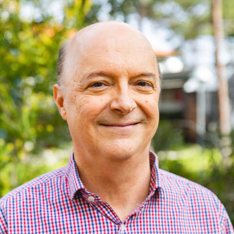

Invited Speakers
Distinguished experts sharing foundational and applied work in mechanistic interpretability and AI safety.
Verena Rieser
Senior Staff Research Scientist at Google DeepMind, where she founded the VOICES team (Voices-of-all in alignment). Her team is a core contributor to Gemini with a mission to enhance model safety and usability for diverse communities. She has pioneered work in data-driven multimodal Dialogue Systems and Natural Language Generation, encompassing conversational RL agents and evaluation methodologies. She previously was a full professor at Heriot-Watt University, Edinburgh, and held a Royal Society Leverhulme Senior Research Fellowship.
Arthur Conmy
Senior Research Engineer at Google DeepMind on the Language Model Interpretability team, focusing on mechanistic interpretability and practical safety techniques for frontier models. He produced foundational work in automated circuit discovery, including Interpretability in the Wild (ICLR) and the ACDC algorithm (NeurIPS), and has pioneered activation probes in live deployments to detect misuse. He was previously a researcher at Redwood Research.
Sarah Wiegreffe
Assistant professor in the Department of Computer Science at the University of Maryland, working on the explainability and interpretability of language models to make them more reliable, safe, and transparent. She has been honored as a 3-time Rising Star in EECS, Machine Learning, and Generative AI. She was previously a postdoc at the Allen Institute for AI and the University of Washington. She received her Ph.D. and M.S. degrees from Georgia Tech.

Flora Salim
Professor in the School of Computer Science and Engineering at UNSW Sydney and the Deputy Director (Engagement) of the UNSW AI Institute. She is a leading expert in trustworthy and robust machine learning, serving as a Chief Investigator for the ARC Centre of Excellence for Automated Decision-Making and Society (ADM+S). Her research focuses on the robustness of Large Language Models (LLMs), vulnerabilities in Supervised Fine-Tuning (SFT), and aligning models through cognitive frameworks like Theory of Mind (ToM).

Tom Gedeon
Professor at the School of Electrical Engineering, Computing and Mathematical Sciences at Curtin University and Director of the Optus Centre for Artificial Intelligence. His research spans artificial intelligence, human-centered AI, affective computing, multimodal learning, computer vision, and human–AI interaction, with a strong emphasis on responsive and responsible AI systems. He has authored hundreds of publications and supervised numerous researchers across machine learning, computer vision, biomedical AI, and intelligent systems.